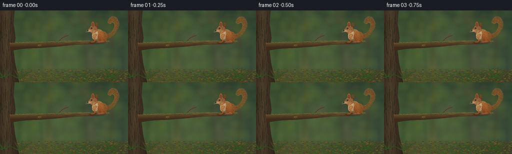
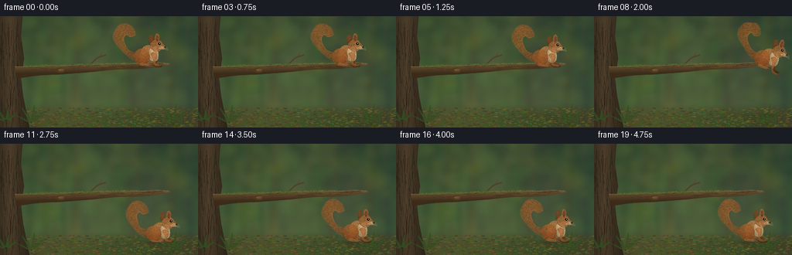
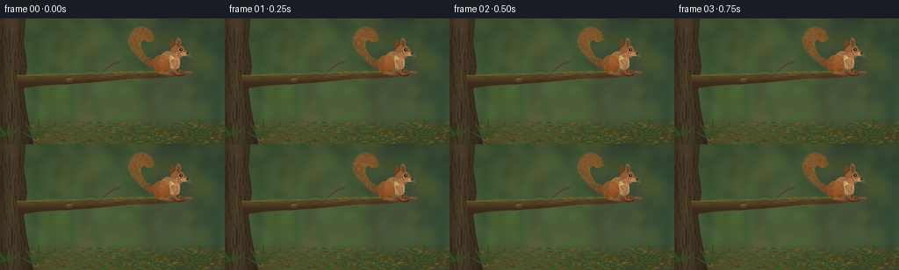
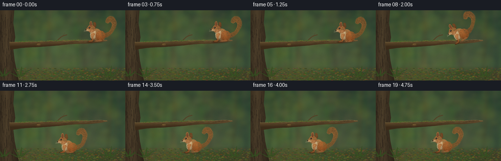

CODING AGENTS AS PIXEL WORLD MODELS
traex/GPT-6.1-Sol · dynamic_spatial_relationship_0022
点击播放 · 原生 RGB 像素
逐轮保存的候选
回放视频、检查图与代码变化。
每份候选均可单独播放。实际图片检查记录在下方工具轨迹中。
候选 01播放与检查图
点击播放 · 原生 RGB 像素


展开代码变化
--- 上一保存版本
+++ 本次保存版本
@@ -0,0 +1,223 @@
+import math, json
+from pathlib import Path
+import numpy as np
+from PIL import Image, ImageDraw, ImageFilter
+import artifact_io
+
+ROOT=Path(__file__).resolve().parent
+W,H,S=256,144,4
+rng=np.random.default_rng(122)
+
+def smooth(points, steps=8):
+ p=np.array(points,float); out=[]
+ for i in range(len(p)-1):
+ a=p[max(0,i-1)];b=p[i];c=p[i+1];d=p[min(len(p)-1,i+2)]
+ for t in np.linspace(0,1,steps,endpoint=False):
+ out.append(tuple(.5*((2*b)+(-a+c)*t+(2*a-5*b+4*c-d)*t*t+(-a+3*b-3*c+d)*t*t*t)))
+ out.append(tuple(p[-1]));return out
+
+def line(draw, pts, fill, width=1):
+ draw.line([(int(x*S),int(y*S)) for x,y in pts], fill=fill,width=max(1,int(width*S)),joint='curve')
+def ellipse(draw,box,fill):draw.ellipse(tuple(int(v*S) for v in box),fill=fill)
+
+# Forest: an atmospheric painted depth field, with soft, distant trunks.
+y,x=np.mgrid[:H*S,:W*S]; yy=y/S;xx=x/S
+r=45+33*yy/H+9*np.sin(xx/67);g=69+31*yy/H+6*np.sin(xx/45);b=48+15*yy/H
+bg=Image.fromarray(np.uint8(np.clip(np.stack([r,g,b],2),0,255)))
+d=ImageDraw.Draw(bg,'RGBA')
+for i in range(26):
+ tx=float(rng.uniform(-15,272)); wd=float(rng.uniform(2,12));lean=float(rng.uniform(-15,15))
+ col=(int(rng.uniform(45,81)),int(rng.uniform(61,86)),int(rng.uniform(41,61)),int(rng.uniform(70,150)))
+ d.polygon([(int((tx-wd/2)*S),0),(int((tx+wd/2)*S),0),(int((tx+lean+wd/2)*S),H*S),(int((tx+lean-wd/2)*S),H*S)],fill=col)
+for i in range(280):
+ cx=float(rng.uniform(0,W));cy=float(rng.uniform(-20,126));rad=float(rng.uniform(2,19))
+ ellipse(d,(cx-rad,cy-rad*.65,cx+rad,cy+rad*.65),(int(rng.uniform(69,118)),int(rng.uniform(90,133)),int(rng.uniform(41,76)),int(rng.uniform(12,48))))
+bg=bg.filter(ImageFilter.GaussianBlur(3.2*S))
+# Slanted warm shafts of light.
+light=Image.new('RGBA',bg.size);ld=ImageDraw.Draw(light)
+ld.polygon([(145*S,0),(167*S,0),(94*S,144*S),(61*S,144*S)],fill=(229,218,149,15))
+ld.polygon([(224*S,0),(230*S,0),(167*S,144*S),(140*S,144*S)],fill=(231,221,173,14))
+bg=Image.alpha_composite(bg.convert('RGBA'),light.filter(ImageFilter.GaussianBlur(8*S))).convert('RGB')
+# Mossy floor, dirt and litter.
+a=np.asarray(bg).astype(float); ground=np.clip((yy-113)/17,0,1)[...,None]
+soil=np.stack([69+10*np.sin(xx/40),75+8*np.sin(xx/55),42+3*np.sin(xx/40)],2)
+a=a*(1-ground)+soil*ground
+noise=rng.normal(0,1.0,a.shape[:2])[...,None];bg=Image.fromarray(np.uint8(np.clip(a+noise,0,255)));d=ImageDraw.Draw(bg)
+for i in range(1400):
+ gx=float(rng.uniform(0,256));gy=float(rng.uniform(118,147));rad=float(rng.uniform(.3,2.4));
+ col=tuple(int(v) for v in (rng.uniform(50,117),rng.uniform(60,105),rng.uniform(27,59)))
+ ellipse(d,(gx,gy,gx+rad*2,gy+rad*.45),col)
+for i in range(170):
+ gx=float(rng.uniform(0,256));gy=float(rng.uniform(123,145));line(d,[(gx,gy),(gx+rng.uniform(-2,2),gy-rng.uniform(2,6))],(80,96,44),.3)
+# Foreground trunk textured to match its cylindrical volume.
+trunk=Image.new('L',bg.size);td=ImageDraw.Draw(trunk)
+pts=[(0,0),(29,0),(27,26),(31,55),(27,80),(30,104),(38,144),(0,144)]
+td.polygon([(int(px*S),int(py*S)) for px,py in pts],fill=255)
+shade=np.clip(1-abs(xx-13)/24,0,1)
+tex=3*np.sin(xx*2.9+np.sin(yy*.17)*2)+2*np.sin(xx*6.3+yy*.12)+rng.normal(0,1.2,xx.shape)
+col=np.stack([48+33*shade+tex,39+27*shade+tex,27+18*shade+tex],2)
+bg.paste(Image.fromarray(np.uint8(np.clip(col,0,255))),(0,0),trunk)
+d=ImageDraw.Draw(bg)
+for i in range(115):
+ bx=float(rng.uniform(1,28));by=float(rng.uniform(0,144)); ln=float(rng.uniform(4,31))
+ line(d,smooth([(bx,by),(bx+rng.uniform(-1,1),by+ln*.4),(bx+rng.uniform(-2,2),by+ln)]),(42,34,25),rng.uniform(.25,.7))
+# The single horizontal branch establishes a stable spatial reference.
+upper=[(19,65),(49,65),(83,64),(120,62),(151,61),(183,61),(204,60),(219,61)]
+lower=[(219,63),(203,66),(182,68),(151,69),(120,72),(83,75),(48,77),(21,81)]
+branchmask=Image.new('L',bg.size);bd=ImageDraw.Draw(branchmask)
+bd.polygon([(int(px*S),int(py*S)) for px,py in smooth(upper)+smooth(lower)],fill=255)
+shade=np.clip((yy-61)/(14-xx*.027),0,1)
+tex=2*np.sin(xx*.55+yy*3.2)+1.7*np.sin(xx*.21-yy*5)+rng.normal(0,1.1,xx.shape)
+col=np.stack([116-53*shade+tex,92-46*shade+tex,56-29*shade+tex],2)
+bg.paste(Image.fromarray(np.uint8(np.clip(col,0,255))),(0,0),branchmask)
+d=ImageDraw.Draw(bg)
+for i in range(140):
+ bx=float(rng.uniform(30,208));top=65-.025*(bx-30);by=float(rng.uniform(top,top+max(2,11-bx*.037)))
+ length=float(rng.uniform(2,14));line(d,smooth([(bx,by),(bx+length*.5,by-.3),(min(214,bx+length),by-.2)]),(67,52,32),rng.uniform(.12,.45))
+line(d,smooth(upper),(133,116,72),.65)
+# Small bark knots and broken twig, all part of the same limb.
+ellipse(d,(72,67,84,73),(77,57,32));ellipse(d,(75,68,83,71),(111,86,48));line(d,[(79,70),(83,69.5)],(43,35,23),.6)
+line(d,smooth([(114,65),(126,54),(137,50)]),(83,67,40),2.1)
+line(d,[(128,54),(132,46)],(85,69,40),.9)
+for i in range(280):
+ bx=float(rng.uniform(32,181));by=64-.023*(bx-30)+float(rng.uniform(-1,1));
+ ellipse(d,(bx,by,bx+rng.uniform(.4,2.1),by+rng.uniform(.4,1.0)),(int(rng.uniform(68,107)),int(rng.uniform(89,115)),int(rng.uniform(35,58))))
+# Ferns framing the forest floor, away from the jump landing.
+for ox,oy,sz in [(41,139,24),(224,140,27),(8,138,20)]:
+ for a0 in [-1.1,-.55,.15,.8]:
+ dx=math.sin(a0)*sz;dy=-math.cos(a0)*sz
+ line(d,smooth([(ox,oy),(ox+dx*.4,oy+dy*.6),(ox+dx,oy+dy)]),(47,69,29),.6)
+ for t in np.linspace(.2,.85,7):
+ cx=ox+dx*t;cy=oy+dy*t;wid=3.8*(1-t)
+ for side in [-1,1]:
+ d.polygon([(int(cx*S),int(cy*S)),(int((cx+side*wid+dx*.1)*S),int((cy-1.8)*S)),(int((cx+dx*.13)*S),int((cy+dy*.13)*S))],fill=(56,83,35))
+
+# Local animal drawing. Every shape has directional coat texture and soft volume.
+Q=4;SZ=104; C=52
+sy,sx=np.mgrid[:SZ*Q,:SZ*Q];ux=sx/Q-C;uy=sy/Q-C
+
+def squirrel(crouch=0,flight=0,tail_sway=0):
+ out=Image.new('RGBA',(SZ*Q,SZ*Q))
+ random=np.random.default_rng(17)
+ def poly(points):
+ m=Image.new('L',out.size);md=ImageDraw.Draw(m)
+ md.polygon([((a+C)*Q,(b+C)*Q) for a,b in smooth(points)],fill=255);return m
+ def oval(box):
+ m=Image.new('L',out.size);ImageDraw.Draw(m).ellipse(tuple((v+C)*Q for v in box),fill=255);return m
+ def coat(m,base,center,rx,ry,direction=-.8,n=300,dense=False):
+ nonlocal out
+ cx,cy=center
+ light=np.clip(1-np.sqrt(((ux-cx)/rx)**2+((uy-cy)/ry)**2)*.65,0,1)
+ illumination=light+np.clip((-uy+cy)/(ry*3),-.22,.24)
+ grain=random.normal(0,1.7,ux.shape)+1.4*np.sin(ux*4+uy*7)
+ col=np.zeros((SZ*Q,SZ*Q,4),np.uint8)
+ for k,bc in enumerate(base):col[:,:,k]=np.clip(bc*(.65+.42*illumination)+grain,0,255)
+ col[:,:,3]=np.asarray(m);layer=Image.fromarray(col);dr=ImageDraw.Draw(layer)
+ mask=np.asarray(m)
+ hits=np.argwhere(mask>220)
+ for v in random.choice(len(hits),size=n,replace=True):
+ py,px=hits[v]; fx=px/Q-C;fy=py/Q-C
+ angle=direction+random.uniform(-.4,.4)
+ if dense:angle=math.atan2(fy+18,fx-24)+math.pi/2
+ ln=random.uniform(.5,2.5 if dense else 1.5)
+ endx=px+math.cos(angle)*ln*Q;endy=py+math.sin(angle)*ln*Q
+ ex=int(np.clip(endx,0,SZ*Q-1));ey=int(np.clip(endy,0,SZ*Q-1))
+ if mask[ey,ex]<100:continue
+ fac=random.uniform(.68,1.30)
+ color=tuple(int(np.clip(c*fac,0,255)) for c in base)+(140,)
+ dr.line([(px,py),(endx,endy)],fill=color,width=random.choice([1,1,2]))
+ out=Image.alpha_composite(out,layer)
+ def stroke(pts,color,w):
+ dr=ImageDraw.Draw(out);dr.line([((a+C)*Q,(b+C)*Q) for a,b in smooth(pts)],fill=color,width=max(1,int(w*Q)))
+ def dot(box,color):
+ ImageDraw.Draw(out).ellipse(tuple((v+C)*Q for v in box),fill=color)
+ # Large recurved, richly furred squirrel tail.
+ ts=tail_sway
+ tp=[(6,6),(16,4),(28,-5),(37+ts,-20),(38+ts,-32),(32+ts,-42),(23+ts,-44),(16+ts,-39),(14+ts,-31),(19+ts,-28),(24+ts,-31),(28+ts,-27),(27+ts,-19),(21,-9),(10,-4),(6,6)]
+ coat(poly(tp),(155,91,43),(29,-25),18,30,n=2300,dense=True)
+ # Airy guard hairs soften the tail outline.
+ dr=ImageDraw.Draw(out)
+ contour=smooth(tp,12)
+ for tx,ty in contour[10:-15]:
+ vx=tx-25;vy=ty+24;norm=max(1,math.hypot(vx,vy));length=random.uniform(.6,2)
+ dr.line([((tx+C)*Q,(ty+C)*Q),((tx+C+vx/norm*length)*Q,(ty+C+vy/norm*length)*Q)],fill=(173,115,64,190),width=1)
+ # Far leg and pale throat are behind the body.
+ coat(poly([(-10,-2),(-19,3),(-21,12-crouch*3),(-27,14-crouch*3),(-27,16-crouch*3),(-17,16-crouch*3),(-14,8),(-5,3),(-10,-2)]),(104,61,32),(-15,5),12,12,n=150)
+ coat(oval((-20,-16,4,11)),(176,118,66),(-8,-9),16,17,n=600)
+ coat(poly([(-18,-13),(-22,-7),(-22,4),(-17,8),(-10,5),(-10,-10),(-18,-13)]),(219,190,142),(-17,-5),8,14,n=280)
+ # Round haunch and muscular hind foot.
+ coat(oval((-10,-11,13,13-crouch*2)),(163,94,44),(0,-4),15,17,n=900)
+ coat(oval((-7,1,8,13)),(152,85,38),(0,4),9,9,n=350)
+ coat(poly([(1,9),(5,12-crouch*2),(3,14-crouch*2),(-9,15-crouch*2),(-13,14-crouch*2),(-10,12-crouch*2),(-2,11),(1,9)]),(159,101,58),(-4,12),12,4,n=170)
+ stroke([(-10,14-crouch*2),(-12,14.6-crouch*2)],(60,40,28,255),.5)
+ # Near forearm: distinctive slim small paws.
+ coat(poly([(-15,-6),(-20,-4),(-20,3),(-18,10-crouch*2),(-22,12-crouch*2),(-26,13-crouch*2),(-25,15-crouch*2),(-18,14-crouch*2),(-15,10),(-15,4),(-11,-3),(-15,-6)]),(172,106,54),(-17,0),8,18,n=220)
+ stroke([(-25,14-crouch*2),(-27,14.3-crouch*2)],(58,39,29,255),.45)
+ # Far ear, head, cheek, nearer tufted ear, muzzle.
+ coat(poly([(-15,-19),(-15,-29),(-12,-31),(-9,-28),(-9,-19),(-15,-19)]),(121,67,33),(-12,-25),5,8,n=150)
+ head=[(-11,-19),(-18,-24),(-25,-23),(-29,-18),(-33,-13),(-30,-10),(-23,-9),(-16,-8),(-11,-12),(-11,-19)]
+ coat(poly(head),(176,107,57),(-21,-18),13,11,n=650)
+ coat(oval((-26,-15,-14,-6)),(180,120,70),(-20,-11),8,7,n=220)
+ coat(poly([(-23,-21),(-24,-29),(-21,-33),(-18,-31),(-17,-23),(-19,-20),(-23,-21)]),(168,99,53),(-21,-26),5,9,n=240)
+ coat(poly([(-22,-23),(-22,-29),(-20,-30),(-19,-25),(-20,-22),(-22,-23)]),(112,62,42),(-21,-26),4,5,n=50)
+ for tx,ty in [(-22,-31),(-21,-32),(-19,-31)]:stroke([(tx,ty),(tx-.4,ty-1.7)],(166,108,64,255),.35)
+ coat(poly([(-28,-15),(-33,-13),(-31,-10),(-25,-10),(-23,-12),(-28,-15)]),(204,165,114),(-28,-12),7,5,n=140)
+ dot((-33.7,-13.9,-31,-11.6),(42,29,23,255))
+ stroke([(-31.7,-10.5),(-28,-9.7),(-26,-10.1)],(79,50,33,255),.4)
+ # Glossy dark eye surrounded by a fine tawny lid.
+ dot((-26.7,-20.2,-21.3,-15.2),(205,144,79,255))
+ dot((-26.2,-19.8,-21.9,-15.8),(33,23,16,255))
+ dot((-25.5,-19.3,-23,-16.8),(13,15,12,255))
+ dot((-25,-19,-23.8,-17.9),(242,241,211,255))
+ dot((-23.7,-17.2,-23.2,-16.7),(165,173,126,255))
+ for k in range(4):
+ stroke([(-29,-11.9+k*.4),(-36-k*.5,-13.1+k*1.6)],(214,194,155,160),.16)
+ return out
+
+frames=[]
+for i in range(20):
+ crouch=0;flight=0;angle=0
+ if i<=4:
+ hx,hy=204,51.5+math.sin(i*1.0)*.25;tail=.5*math.sin(i*.8)
+ elif i==5:
+ hx,hy=203,53;crouch=.5;tail=-.5
+ elif i==6:
+ hx,hy=201,55;crouch=1;tail=-1
+ elif i==7:
+ hx,hy=190,47;angle=14;flight=1;tail=1
+ elif i==8:
+ hx,hy=179,48;angle=24;flight=1;tail=2
+ elif i==9:
+ hx,hy=166,64;angle=27;flight=1;tail=2
+ elif i==10:
+ hx,hy=153,90;angle=17;flight=1;tail=1
+ elif i==11:
+ hx,hy=146,116;crouch=1;angle=0;tail=-2
+ elif i==12:
+ hx,hy=145,114;crouch=.4;tail=-1
+ else:
+ hx,hy=145,113.7+math.sin((i-13)*.8)*.18;tail=math.sin(i*.65)*.8
+ im=bg.copy().convert('RGBA')
+ # Soft contact shadow moves below the airborne animal.
+ shadow=Image.new('RGBA',im.size);sd=ImageDraw.Draw(shadow)
+ ground_shadow=i>=7
+ if ground_shadow:
+ height=max(0,114-hy);alpha=int(48-height*.37);rad=13+height*.035
+ ellipse(sd,(hx-rad,128-2,hx+rad,129.5),(28,27,17,alpha))
+ else:
+ ellipse(sd,(hx-28,63,hx+6,67),(24,25,15,65))
+ im=Image.alpha_composite(im,shadow.filter(ImageFilter.GaussianBlur(1.4*S)))
+ sprite=squirrel(crouch,flight,tail)
+ if angle:sprite=sprite.rotate(angle,Image.Resampling.BICUBIC,expand=False,center=(C*Q,C*Q))
+ # Same scale and camera throughout; squirrel's identity is preserved.
+ scale=.88
+ sprite=sprite.resize((round(SZ*Q*scale),round(SZ*Q*scale)),Image.Resampling.LANCZOS)
+ im.alpha_composite(sprite,(round(hx*S-C*Q*scale),round(hy*S-C*Q*scale)))
+ # Subtle warm final color grade and edge falloff.
+ arr=np.asarray(im.convert('RGB')).astype(float)
+ vign=1-.11*((xx-135)/170)**2-.055*((yy-70)/110)**2
+ arr=arr*vign[...,None]
+ im=Image.fromarray(np.uint8(np.clip(arr,0,255))).resize((W,H),Image.Resampling.LANCZOS)
+ frames.append(np.asarray(im))
+artifact_io.save(np.stack(frames),ROOT)
+print('Saved',len(frames),'RGB frames')
候选 02播放与检查图
点击播放 · 原生 RGB 像素


展开代码变化
--- 上一保存版本
+++ 本次保存版本
@@ -133,7 +133,7 @@
ImageDraw.Draw(out).ellipse(tuple((v+C)*Q for v in box),fill=color)
# Large recurved, richly furred squirrel tail.
ts=tail_sway
- tp=[(6,6),(16,4),(28,-5),(37+ts,-20),(38+ts,-32),(32+ts,-42),(23+ts,-44),(16+ts,-39),(14+ts,-31),(19+ts,-28),(24+ts,-31),(28+ts,-27),(27+ts,-19),(21,-9),(10,-4),(6,6)]
+ tp=[(6,6),(16,4),(28,-5),(41+ts,-20),(43+ts,-32),(36+ts,-44),(25+ts,-47),(15+ts,-41),(12+ts,-31),(19+ts,-28),(24+ts,-31),(28+ts,-27),(27+ts,-19),(21,-9),(10,-4),(6,6)]
coat(poly(tp),(155,91,43),(29,-25),18,30,n=2300,dense=True)
# Airy guard hairs soften the tail outline.
dr=ImageDraw.Draw(out)
@@ -151,8 +151,8 @@
coat(poly([(1,9),(5,12-crouch*2),(3,14-crouch*2),(-9,15-crouch*2),(-13,14-crouch*2),(-10,12-crouch*2),(-2,11),(1,9)]),(159,101,58),(-4,12),12,4,n=170)
stroke([(-10,14-crouch*2),(-12,14.6-crouch*2)],(60,40,28,255),.5)
# Near forearm: distinctive slim small paws.
- coat(poly([(-15,-6),(-20,-4),(-20,3),(-18,10-crouch*2),(-22,12-crouch*2),(-26,13-crouch*2),(-25,15-crouch*2),(-18,14-crouch*2),(-15,10),(-15,4),(-11,-3),(-15,-6)]),(172,106,54),(-17,0),8,18,n=220)
- stroke([(-25,14-crouch*2),(-27,14.3-crouch*2)],(58,39,29,255),.45)
+ coat(poly([(-15,-6),(-20,-4),(-20,3),(-18,10-crouch*2+flight*3),(-22-flight*2,12-crouch*2+flight*5),(-26-flight*2,13-crouch*2+flight*5),(-25-flight*2,15-crouch*2+flight*5),(-18,14-crouch*2+flight*3),(-15,10),(-15,4),(-11,-3),(-15,-6)]),(172,106,54),(-17,0),8,18,n=220)
+ stroke([(-25-flight*2,14-crouch*2+flight*5),(-27-flight*2,14.3-crouch*2+flight*5)],(58,39,29,255),.45)
# Far ear, head, cheek, nearer tufted ear, muzzle.
coat(poly([(-15,-19),(-15,-29),(-12,-31),(-9,-28),(-9,-19),(-15,-19)]),(121,67,33),(-12,-25),5,8,n=150)
head=[(-11,-19),(-18,-24),(-25,-23),(-29,-18),(-33,-13),(-30,-10),(-23,-9),(-16,-8),(-11,-12),(-11,-19)]
@@ -178,25 +178,25 @@
for i in range(20):
crouch=0;flight=0;angle=0
if i<=4:
- hx,hy=204,51.5+math.sin(i*1.0)*.25;tail=.5*math.sin(i*.8)
+ hx,hy=185,51.5+math.sin(i*1.0)*.25;tail=.5*math.sin(i*.8)
elif i==5:
- hx,hy=203,53;crouch=.5;tail=-.5
+ hx,hy=188,53;crouch=.5;tail=-.5
elif i==6:
- hx,hy=201,55;crouch=1;tail=-1
+ hx,hy=191,55;crouch=1;tail=-1
elif i==7:
- hx,hy=190,47;angle=14;flight=1;tail=1
+ hx,hy=210,46;angle=-12;flight=1;tail=1
elif i==8:
- hx,hy=179,48;angle=24;flight=1;tail=2
+ hx,hy=219,54;angle=-15;flight=1;tail=2
elif i==9:
- hx,hy=166,64;angle=27;flight=1;tail=2
+ hx,hy=224,77;angle=-12;flight=1;tail=2
elif i==10:
- hx,hy=153,90;angle=17;flight=1;tail=1
+ hx,hy=213,102;angle=-6;flight=1;tail=1
elif i==11:
- hx,hy=146,116;crouch=1;angle=0;tail=-2
+ hx,hy=200,116;crouch=1;angle=0;tail=-2
elif i==12:
- hx,hy=145,114;crouch=.4;tail=-1
+ hx,hy=199,114;crouch=.4;tail=-1
else:
- hx,hy=145,113.7+math.sin((i-13)*.8)*.18;tail=math.sin(i*.65)*.8
+ hx,hy=199,113.7+math.sin((i-13)*.8)*.18;tail=math.sin(i*.65)*.8
im=bg.copy().convert('RGBA')
# Soft contact shadow moves below the airborne animal.
shadow=Image.new('RGBA',im.size);sd=ImageDraw.Draw(shadow)
@@ -207,7 +207,7 @@
else:
ellipse(sd,(hx-28,63,hx+6,67),(24,25,15,65))
im=Image.alpha_composite(im,shadow.filter(ImageFilter.GaussianBlur(1.4*S)))
- sprite=squirrel(crouch,flight,tail)
+ sprite=squirrel(crouch,flight,tail).transpose(Image.Transpose.FLIP_LEFT_RIGHT)
if angle:sprite=sprite.rotate(angle,Image.Resampling.BICUBIC,expand=False,center=(C*Q,C*Q))
# Same scale and camera throughout; squirrel's identity is preserved.
scale=.88
可观测工具轨迹
实际执行的命令与返回图片。
命令 1exit 0
/bin/bash -lc 'ls -la && cat prompt.txt && cat GENERATION_RULES.md && cat task_spec.json'
命令 2exit 0
/bin/bash -lc 'cat artifact_io.py'
命令 3exit 0
/bin/bash -lc "cat > generate.py <<'PY'
import math, json
from pathlib import Path
import numpy as np
from PIL import Image, ImageDraw, ImageFilter
import artifact_io
ROOT=Path(__file__).resolve().parent
W,H,S=256,144,4
rng=np.random.default_rng(122)
def smooth(points, steps=8):
p=np.array(points,float); out=[]
for i in range(len(p)-1):
a=p[max(0,i-1)];b=p[i];c=p[i+1];d=p[min(len(p)-1,i+2)]
for t in np.linspace(0,1,steps,endpoint=False):
out.append(tuple(.5*((2*b)+(-a+c)*t+(2*a-5*b+4*c-d)*t*t+(-a+3*b-3*c+d)*t*t*t)))
out.append(tuple(p[-1]));return out
def line(draw, pts, fill, width=1):
draw.line([(int(x*S),int(y*S)) for x,y in pts], fill=fill,width=max(1,int(width*S)),joint='curve')
def ellipse(draw,box,fill):draw.ellipse(tuple(int(v*S) for v in box),fill=fill)
# Forest: an atmospheric painted depth field, with soft, distant trunks.
y,x=np.mgrid[:H*S,:W*S]; yy=y/S;xx=x/S
r=45+33*yy/H+9*np.sin(xx/67);g=69+31*yy/H+6*np.sin(xx/45);b=48+15*yy/H
bg=Image.fromarray(np.uint8(np.clip(np.stack([r,g,b],2),0,255)))
d=ImageDraw.Draw(bg,'RGBA')
for i in range(26):
tx=float(rng.uniform(-15,272)); wd=float(rng.uniform(2,12));lean=float(rng.uniform(-15,15))
col=(int(rng.uniform(45,81)),int(rng.uniform(61,86)),int(rng.uniform(41,61)),int(rng.uniform(70,150)))
d.polygon([(int((tx-wd/2)*S),0),(int((tx+wd/2)*S),0),(int((tx+lean+wd/2)*S),H*S),(int((tx+lean-wd/2)*S),H*S)],fill=col)
for i in range(280):
cx=float(rng.uniform(0,W));cy=float(rng.uniform(-20,126));rad=float(rng.uniform(2,19))
ellipse(d,(cx-rad,cy-rad*.65,cx+rad,cy+rad*.65),(int(rng.uniform(69,118)),int(rng.uniform(90,133)),int(rng.uniform(41,76)),int(rng.uniform(12,48))))
bg=bg.filter(ImageFilter.GaussianBlur(3.2*S))
# Slanted warm shafts of light.
light=Image.new('RGBA',bg.size);ld=ImageDraw.Draw(light)
ld.polygon([(145*S,0),(167*S,0),(94*S,144*S),(61*S,144*S)],fill=(229,218,149,15))
ld.polygon([(224*S,0),(230*S,0),(167*S,144*S),(140*S,144*S)],fill=(231,221,173,14))
bg=Image.alpha_composite(bg.convert('RGBA'),light.filter(ImageFilter.GaussianBlur(8*S))).convert('RGB')
# Mossy floor, dirt and litter.
a=np.asarray(bg).astype(float); ground=np.clip((yy-113)/17,0,1)[...,None]
soil=np.stack([69+10*np.sin(xx/40),75+8*np.sin(xx/55),42+3*np.sin(xx/40)],2)
a=a*(1-ground)+soil*ground
noise=rng.normal(0,1.0,a.shape[:2])[...,None];bg=Image.fromarray(np.uint8(np.clip(a+noise,0,255)));d=ImageDraw.Draw(bg)
for i in range(1400):
gx=float(rng.uniform(0,256));gy=float(rng.uniform(118,147));rad=float(rng.uniform(.3,2.4));
col=tuple(int(v) for v in (rng.uniform(50,117),rng.uniform(60,105),rng.uniform(27,59)))
ellipse(d,(gx,gy,gx+rad*2,gy+rad*.45),col)
for i in range(170):
gx=float(rng.uniform(0,256));gy=float(rng.uniform(123,145));line(d,[(gx,gy),(gx+rng.uniform(-2,2),gy-rng.uniform(2,6))],(80,96,44),.3)
# Foreground trunk textured to match its cylindrical volume.
trunk=Image.new('L',bg.size);td=ImageDraw.Draw(trunk)
pts=[(0,0),(29,0),(27,26),(31,55),(27,80),(30,104),(38,144),(0,144)]
td.polygon([(int(px*S),int(py*S)) for px,py in pts],fill=255)
shade=np.clip(1-abs(xx-13)/24,0,1)
tex=3*np.sin(xx*2.9+np.sin(yy*.17)*2)+2*np.sin(xx*6.3+yy*.12)+rng.normal(0,1.2,xx.shape)
col=np.stack([48+33*shade+tex,39+27*shade+tex,27+18*shade+tex],2)
bg.paste(Image.fromarray(np.uint8(np.clip(col,0,255))),(0,0),trunk)
d=ImageDraw.Draw(bg)
for i in range(115):
bx=float(rng.uniform(1,28));by=float(rng.uniform(0,144)); ln=float(rng.uniform(4,31))
line(d,smooth([(bx,by),(bx+rng.uniform(-1,1),by+ln*.4),(bx+rng.uniform(-2,2),by+ln)]),(42,34,25),rng.uniform(.25,.7))
# The single horizontal branch establishes a stable spatial reference.
upper=[(19,65),(49,65),(83,64),(120,62),(151,61),(183,61),(204,60),(219,61)]
lower=[(219,63),(203,66),(182,68),(151,69),(120,72),(83,75),(48,77),(21,81)]
branchmask=Image.new('L',bg.size);bd=ImageDraw.Draw(branchmask)
bd.polygon([(int(px*S),int(py*S)) for px,py in smooth(upper)+smooth(lower)],fill=255)
shade=np.clip((yy-61)/(14-xx*.027),0,1)
tex=2*np.sin(xx*.55+yy*3.2)+1.7*np.sin(xx*.21-yy*5)+rng.normal(0,1.1,xx.shape)
col=np.stack([116-53*shade+tex,92-46*shade+tex,56-29*shade+tex],2)
bg.paste(Image.fromarray(np.uint8(np.clip(col,0,255))),(0,0),branchmask)
d=ImageDraw.Draw(bg)
for i in range(140):
bx=float(rng.uniform(30,208));top=65-.025*(bx-30);by=float(rng.uniform(top,top+max(2,11-bx*.037)))
length=float(rng.uniform(2,14));line(d,smooth([(bx,by),(bx+length*.5,by-.3),(min(214,bx+length),by-.2)]),(67,52,32),rng.uniform(.12,.45))
line(d,smooth(upper),(133,116,72),.65)
# Small bark knots and broken twig, all part of the same limb.
ellipse(d,(72,67,84,73),(77,57,32));ellipse(d,(75,68,83,71),(111,86,48));line(d,[(79,70),(83,69.5)],(43,35,23),.6)
line(d,smooth([(114,65),(126,54),(137,50)]),(83,67,40),2.1)
line(d,[(128,54),(132,46)],(85,69,40),.9)
for i in range(280):
bx=float(rng.uniform(32,181));by=64-.023*(bx-30)+float(rng.uniform(-1,1));
ellipse(d,(bx,by,bx+rng.uniform(.4,2.1),by+rng.uniform(.4,1.0)),(int(rng.uniform(68,107)),int(rng.uniform(89,115)),int(rng.uniform(35,58))))
# Ferns framing the forest floor, away from the jump landing.
for ox,oy,sz in [(41,139,24),(224,140,27),(8,138,20)]:
for a0 in [-1.1,-.55,.15,.8]:
dx=math.sin(a0)*sz;dy=-math.cos(a0)*sz
line(d,smooth([(ox,oy),(ox+dx*.4,oy+dy*.6),(ox+dx,oy+dy)]),(47,69,29),.6)
for t in np.linspace(.2,.85,7):
cx=ox+dx*t;cy=oy+dy*t;wid=3.8*(1-t)
for side in [-1,1]:
d.polygon([(int(cx*S),int(cy*S)),(int((cx+side*wid+dx*.1)*S),int((cy-1.8)*S)),(int((cx+dx*.13)*S),int((cy+dy*.13)*S))],fill=(56,83,35))
# Local animal drawing. Every shape has directional coat texture and soft volume.
Q=4;SZ=104; C=52
sy,sx=np.mgrid[:SZ*Q,:SZ*Q];ux=sx/Q-C;uy=sy/Q-C
def squirrel(crouch=0,flight=0,tail_sway=0):
out=Image.new('RGBA',(SZ*Q,SZ*Q))
random=np.random.default_rng(17)
def poly(points):
m=Image.new('L',out.size);md=ImageDraw.Draw(m)
md.polygon([((a+C)*Q,(b+C)*Q) for a,b in smooth(points)],fill=255);return m
def oval(box):
m=Image.new('L',out.size);ImageDraw.Draw(m).ellipse(tuple((v+C)*Q for v in box),fill=255);return m
def coat(m,base,center,rx,ry,direction=-.8,n=300,dense=False):
nonlocal out
cx,cy=center
light=np.clip(1-np.sqrt(((ux-cx)/rx)**2+((uy-cy)/ry)**2)*.65,0,1)
illumination=light+np.clip((-uy+cy)/(ry*3),-.22,.24)
grain=random.normal(0,1.7,ux.shape)+1.4*np.sin(ux*4+uy*7)
col=np.zeros((SZ*Q,SZ*Q,4),np.uint8)
for k,bc in enumerate(base):col[:,:,k]=np.clip(bc*(.65+.42*illumination)+grain,0,255)
col[:,:,3]=np.asarray(m);layer=Image.fromarray(col);dr=ImageDraw.Draw(layer)
mask=np.asarray(m)
hits=np.argwhere(mask>220)
for v in random.choice(len(hits),size=n,replace=True):
py,px=hits[v]; fx=px/Q-C;fy=py/Q-C
angle=direction+random.uniform(-.4,.4)
if dense:angle=math.atan2(fy+18,fx-24)+math.pi/2
ln=random.uniform(.5,2.5 if dense else 1.5)
endx=px+math.cos(angle)*ln*Q;endy=py+math.sin(angle)*ln*Q
ex=int(np.clip(endx,0,SZ*Q-1));ey=int(np.clip(endy,0,SZ*Q-1))
if mask[ey,ex]<100:continue
fac=random.uniform(.68,1.30)
color=tuple(int(np.clip(c*fac,0,255)) for c in base)+(140,)
dr.line([(px,py),(endx,endy)],fill=color,width=random.choice([1,1,2]))
out=Image.alpha_composite(out,layer)
def stroke(pts,color,w):
dr=ImageDraw.Draw(out);dr.line([((a+C)*Q,(b+C)*Q) for a,b in smooth(pts)],fill=color,width=max(1,int(w*Q)))
def dot(box,color):
ImageDraw.Draw(out).ellipse(tuple((v+C)*Q for v in box),fill=color)
# Large recurved, richly furred squirrel tail.
ts=tail_sway
tp=[(6,6),(16,4),(28,-5),(37+ts,-20),(38+ts,-32),(32+ts,-42),(23+ts,-44),(16+ts,-39),(14+ts,-31),(19+ts,-28),(24+ts,-31),(28+ts,-27),(27+ts,-19),(21,-9),(10,-4),(6,6)]
coat(poly(tp),(155,91,43),(29,-25),18,30,n=2300,dense=True)
# Airy guard hairs soften the tail outline.
dr=ImageDraw.Draw(out)
contour=smooth(tp,12)
for tx,ty in contour[10:-15]:
vx=tx-25;vy=ty+24;norm=max(1,math.hypot(vx,vy));length=random.uniform(.6,2)
dr.line([((tx+C)*Q,(ty+C)*Q),((tx+C+vx/norm*length)*Q,(ty+C+vy/norm*length)*Q)],fill=(173,115,64,190),width=1)
# Far leg and pale throat are behind the body.
coat(poly([(-10,-2),(-19,3),(-21,12-crouch*3),(-27,14-crouch*3),(-27,16-crouch*3),(-17,16-crouch*3),(-14,8),(-5,3),(-10,-2)]),(104,61,32),(-15,5),12,12,n=150)
coat(oval((-20,-16,4,11)),(176,118,66),(-8,-9),16,17,n=600)
coat(poly([(-18,-13),(-22,-7),(-22,4),(-17,8),(-10,5),(-10,-10),(-18,-13)]),(219,190,142),(-17,-5),8,14,n=280)
# Round haunch and muscular hind foot.
coat(oval((-10,-11,13,13-crouch*2)),(163,94,44),(0,-4),15,17,n=900)
coat(oval((-7,1,8,13)),(152,85,38),(0,4),9,9,n=350)
coat(poly([(1,9),(5,12-crouch*2),(3,14-crouch*2),(-9,15-crouch*2),(-13,14-crouch*2),(-10,12-crouch*2),(-2,11),(1,9)]),(159,101,58),(-4,12),12,4,n=170)
stroke([(-10,14-crouch*2),(-12,14.6-crouch*2)],(60,40,28,255),.5)
# Near forearm: distinctive slim small paws.
coat(poly([(-15,-6),(-20,-4),(-20,3),(-18,10-crouch*2),(-22,12-crouch*2),(-26,13-crouch*2),(-25,15-crouch*2),(-18,14-crouch*2),(-15,10),(-15,4),(-11,-3),(-15,-6)]),(172,106,54),(-17,0),8,18,n=220)
stroke([(-25,14-crouch*2),(-27,14.3-crouch*2)],(58,39,29,255),.45)
# Far ear, head, cheek, nearer tufted ear, muzzle.
coat(poly([(-15,-19),(-15,-29),(-12,-31),(-9,-28),(-9,-19),(-15,-19)]),(121,67,33),(-12,-25),5,8,n=150)
head=[(-11,-19),(-18,-24),(-25,-23),(-29,-18),(-33,-13),(-30,-10),(-23,-9),(-16,-8),(-11,-12),(-11,-19)]
coat(poly(head),(176,107,57),(-21,-18),13,11,n=650)
coat(oval((-26,-15,-14,-6)),(180,120,70),(-20,-11),8,7,n=220)
coat(poly([(-23,-21),(-24,-29),(-21,-33),(-18,-31),(-17,-23),(-19,-20),(-23,-21)]),(168,99,53),(-21,-26),5,9,n=240)
coat(poly([(-22,-23),(-22,-29),(-20,-30),(-19,-25),(-20,-22),(-22,-23)]),(112,62,42),(-21,-26),4,5,n=50)
for tx,ty in [(-22,-31),(-21,-32),(-19,-31)]:stroke([(tx,ty),(tx-.4,ty-1.7)],(166,108,64,255),.35)
coat(poly([(-28,-15),(-33,-13),(-31,-10),(-25,-10),(-23,-12),(-28,-15)]),(204,165,114),(-28,-12),7,5,n=140)
dot((-33.7,-13.9,-31,-11.6),(42,29,23,255))
stroke([(-31.7,-10.5),(-28,-9.7),(-26,-10.1)],(79,50,33,255),.4)
# Glossy dark eye surrounded by a fine tawny lid.
dot((-26.7,-20.2,-21.3,-15.2),(205,144,79,255))
dot((-26.2,-19.8,-21.9,-15.8),(33,23,16,255))
dot((-25.5,-19.3,-23,-16.8),(13,15,12,255))
dot((-25,-19,-23.8,-17.9),(242,241,211,255))
dot((-23.7,-17.2,-23.2,-16.7),(165,173,126,255))
for k in range(4):
stroke([(-29,-11.9+k*.4),(-36-k*.5,-13.1+k*1.6)],(214,194,155,160),.16)
return out
frames=[]
for i in range(20):
crouch=0;flight=0;angle=0
if i<=4:
hx,hy=204,51.5+math.sin(i*1.0)*.25;tail=.5*math.sin(i*.8)
elif i==5:
hx,hy=203,53;crouch=.5;tail=-.5
elif i==6:
hx,hy=201,55;crouch=1;tail=-1
elif i==7:
hx,hy=190,47;angle=14;flight=1;tail=1
elif i==8:
hx,hy=179,48;angle=24;flight=1;tail=2
elif i==9:
hx,hy=166,64;angle=27;flight=1;tail=2
elif i==10:
hx,hy=153,90;angle=17;flight=1;tail=1
elif i==11:
hx,hy=146,116;crouch=1;angle=0;tail=-2
elif i==12:
hx,hy=145,114;crouch=.4;tail=-1
else:
hx,hy=145,113.7+math.sin((i-13)*.8)*.18;tail=math.sin(i*.65)*.8
im=bg.copy().convert('RGBA')
# Soft contact shadow moves below the airborne animal.
shadow=Image.new('RGBA',im.size);sd=ImageDraw.Draw(shadow)
ground_shadow=i>=7
if ground_shadow:
height=max(0,114-hy);alpha=int(48-height*.37);rad=13+height*.035
ellipse(sd,(hx-rad,128-2,hx+rad,129.5),(28,27,17,alpha))
else:
ellipse(sd,(hx-28,63,hx+6,67),(24,25,15,65))
im=Image.alpha_composite(im,shadow.filter(ImageFilter.GaussianBlur(1.4*S)))
sprite=squirrel(crouch,flight,tail)
if angle:sprite=sprite.rotate(angle,Image.Resampling.BICUBIC,expand=False,center=(C*Q,C*Q))
# Same scale and camera throughout; squirrel's identity is preserved.
scale=.88
sprite=sprite.resize((round(SZ*Q*scale),round(SZ*Q*scale)),Image.Resampling.LANCZOS)
im.alpha_composite(sprite,(round(hx*S-C*Q*scale),round(hy*S-C*Q*scale)))
# Subtle warm final color grade and edge falloff.
arr=np.asarray(im.convert('RGB')).astype(float)
vign=1-.11*((xx-135)/170)**2-.055*((yy-70)/110)**2
arr=arr*vign[...,None]
im=Image.fromarray(np.uint8(np.clip(arr,0,255))).resize((W,H),Image.Resampling.LANCZOS)
frames.append(np.asarray(im))
artifact_io.save(np.stack(frames),ROOT)
print('Saved',len(frames),'RGB frames')
PY
python generate.py"命令 4exit 0
/bin/bash -lc "python - <<'PY'
p='generate.py'
s=open(p).read().replace('(37+ts,-20),(38+ts,-32),(32+ts,-42),(23+ts,-44),(16+ts,-39),(14+ts,-31)','(41+ts,-20),(43+ts,-32),(36+ts,-44),(25+ts,-47),(15+ts,-41),(12+ts,-31)')
s=s.replace('hx,hy=204,51.5','hx,hy=185,51.5').replace('hx,hy=203,53','hx,hy=188,53').replace('hx,hy=201,55','hx,hy=191,55')
s=s.replace('hx,hy=190,47;angle=14','hx,hy=210,46;angle=-12')
s=s.replace('hx,hy=179,48;angle=24','hx,hy=219,54;angle=-15')
s=s.replace('hx,hy=166,64;angle=27','hx,hy=224,77;angle=-12')
s=s.replace('hx,hy=153,90;angle=17','hx,hy=213,102;angle=-6')
s=s.replace('hx,hy=146,116','hx,hy=200,116').replace('hx,hy=145,114','hx,hy=199,114').replace('hx,hy=145,113.7','hx,hy=199,113.7')
s=s.replace('sprite=squirrel(crouch,flight,tail)','sprite=squirrel(crouch,flight,tail).transpose(Image.Transpose.FLIP_LEFT_RIGHT)')
# Extend the front paw during flight, giving an airborne reaching pose.
s=s.replace('(-18,10-crouch*2),(-22,12-crouch*2),(-26,13-crouch*2),(-25,15-crouch*2),(-18,14-crouch*2)', '(-18,10-crouch*2+flight*3),(-22-flight*2,12-crouch*2+flight*5),(-26-flight*2,13-crouch*2+flight*5),(-25-flight*2,15-crouch*2+flight*5),(-18,14-crouch*2+flight*3)')
s=s.replace('stroke([(-25,14-crouch*2),(-27,14.3-crouch*2)]','stroke([(-25-flight*2,14-crouch*2+flight*5),(-27-flight*2,14.3-crouch*2+flight*5)]')
open(p,'w').write(s)
PY
python generate.py"视觉工具实际返回图片 1

视觉工具实际返回图片 2

保存候选 2 份；完成命令 4 次；可验证图片返回 2 张。原始 API 响应与完整日志保留在本地。